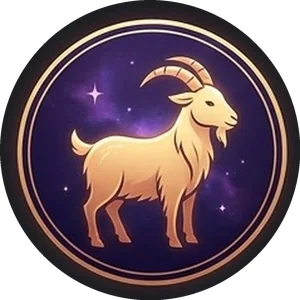
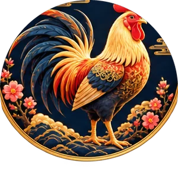
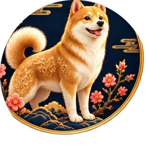

The Zodiac Blog
Discover your sign, compatibility, lucky elements, and ancient wisdom for a happier life.
Explore Your Zodiac →Popular Guides
View All Articles →2026 Horoscope
What to expect in 2026 for each zodiac sign.
Read guide →
Compatibility Guide
Find your best match in love, friendship, and business.
Read guide →
Zodiac Personality
Explore the unique traits of each zodiac sign.
Read guide →
Five Elements
Learn how the five elements influence your zodiac sign.
Read guide →
Calculate Your Zodiac
Find your Chinese zodiac sign by birth year.
Read guide →Love Compatibility
Discover your love compatibility and relationship advice.
Try the tool →The 12 Chinese Zodiac Animals
View Full Zodiac Guide →Rat
Smart, adaptable, and quick-witted.
Explore →Ox
Reliable, hard-working, and honest.
Explore →Tiger
Brave, confident, and competitive.
Explore →Rabbit
Gentle, diplomatic, and kind.
Explore →Dragon
Confident, charismatic, and ambitious.
Explore →Snake
Wise, intuitive, and graceful.
Explore →Horse
Energetic, adventurous, and free-spirited.
Explore →
Goat
Gentle, creative, and caring.
Explore →Monkey
Clever, witty, and curious.
Explore →
Rooster
Observant, confident, and hard-working.
Explore →
Dog
Loyal, protective, and honest.
Explore →Pig
Warm-hearted, generous, and sincere.
Explore →Explore the Chinese Zodiac
The Chinese zodiac is a traditional system based on a 12-year cycle, with each year represented by an animal sign. It is used to explore personality traits, compatibility, lucky elements, relationships, and more.
- 12 Animals: Rat, Ox, Tiger, Rabbit, Dragon, Snake, Horse, Goat, Monkey, Rooster, Dog, and Pig — each repeating every 12 years.
- Five Elements: Wood, Fire, Earth, Metal, and Water layer onto your animal sign on a 10-year cycle, adding depth to your personality.
- Birth Years: Your sign comes from your lunar birth year — birthdays in January or February can fall before the lunar new year, shifting your sign by one.
- Compatibility & Love: Some signs naturally get along in romance, friendship, and business, while others take more effort to understand.
- Lucky Numbers & Colors: Each animal carries its own lucky numbers and colors, often used for big decisions like weddings or new ventures.